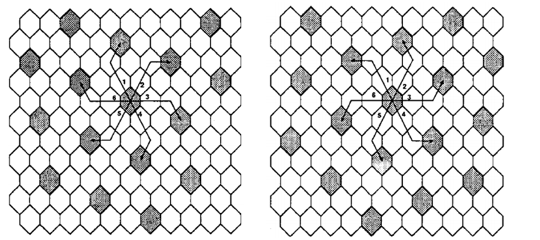
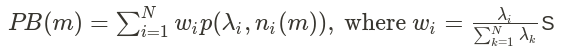
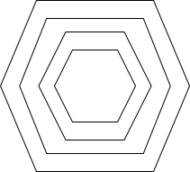
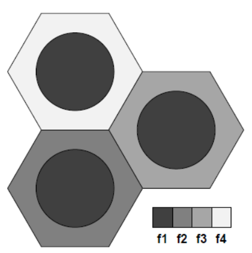

通訊原理與無線網路 - 08 Channel Allocation
本章節講述行動通訊系統如何分配通道。
Static vs Dynamic Channel Allocation
Static:
- equal: 都固定給一樣多的通道。
- non-uniform: 固定的不會改變數量，不同基地台拿到的數量不一樣。
Dynamic:
- 不同的cell分配給不同的通道，按照需要。
- Dynamic 的用中心式的 overhead 滿高，後來有人發明分散式的。分散式的代價：要跟鄰居基地台交換資訊(也是個 overhead)，以避免干擾。
Classification of channel allocation schemes:
- Fixed
- Dynamic
- Hybrid: 結合fixed和dynamic
FCA
FCA: Fixed Channel Allocation
- Static、fixed，一開始就配出去了。
- 若不夠用的話可能的解法：
- 跟鄰居的借(borrowing)
- Non-uniform
- 簡單但沒有彈性
Simple Borrowing Schemes
- Borrowing from the richest: 影響較小，但比較久，因為你要找最 richest 你要都問過。
- Borrow-first-available: 直接找第一個可以的，相對搜尋時間短。
- Reassignment: 自己的通道可以用的時候借的要還回去
Complex Borrowing Schemes
Simple Hybrid Channel Borrowing Strategy
分兩組，一組不外借，一組可外借
- permanent: 不外借
- reserved: 可以借出去的
- 問題來了，如果有20條，要怎麼切幾條 permanent，幾條 reserved？
Borrowing with Channel Ordering
- 沒限制借幾條，但借出的通道有優先權
- Local 的 calls 從高優先權開始用
- 外借的從低優先權開始借
Borrowing with Directional Channel Locking
- 把 directional 的概念引進來。通道借出時，只有被影響到 sector 會被 lock 。被影響的變少了。
DCA
DCA: Dynamic Channel Allocation
會有一個 channel pool，要從裡面去選擇 channel。
選擇時用的 cost function 可能會根據：重複使用距離、未來的 blocking 機率、對整個系統的 blocking 機率的影響等因素。
分類：
- Centralized ⇒ BS之間沒有訊息交換
- Distributed ⇒ BS之間有訊息交換
Centralized DCA schemes
※用這個方式，通道的重新分配可以增加效能，所以是需要做的。
FA (First Available)
找第一個可用而且符合 reuse distance 的。
LODA (Locally Optimized Dynamic Assignment)
用 cost function 選。Cost function 是基於未來鄰居的 blocking probability。
RING (Selection with Maximum Usage on the Ruse Ring)
選擇在同信道集中的大多數 cell 中使用的候選信道。
Distributed DCA schemes
Cell-based
當發起一個 call 時，BS 為一個 cell 分配一個 channel。
BS 要記自己附近的資訊。
LP-DDCA (Local Packing Dynamic Distributed Channel Assignment):
- ACO (Augmented Channel Occupancy) matrix.
- BS 要維護並更新各 BS 通道指派的資訊。
ACI (Adjacent Channel Interference Constraint): LP-DDCA + ACI:
- 多一張表。由於相鄰的通道 isolate 的不是很完美，因此要考慮隔壁鄰居距離這個通道應該有多遠的頻寬。
Signal Strength Measurement-based
MS 和 BS 估算 carrier-to-interference ratio (CIR)，若預測的 CIRs 比門檻高，就分配這個通道。
- SCS (Sequential Channel Search)
- 選擇第一個可以用而且它的 CIR 是可以接受的 channel。
- Service interrupt: 由於一些新的連接，使得有的舊有就連上的 calls 的通道狀況惡化，這些被 interrupted 的找新的 channel 去連接，也可能導致其它 calls 被 interrupted，造成一連串的連鎖反應 ⇒ 最後可能沒有 channel 是 available 的（block）
HCA
Hybrid Channel Allocation Scheme
- Fixed + DCA。分成兩個集合。
- 每個 cell 都給固定數量自己用的 channels。
- Issue: 分給 fixed 跟 dynamic 的比例？
Flexible Channel Allocation Scheme
- 分成 fixed 和 flexible 的 channel sets
- 每個 cell 會有 fixed channel set 用來處理較輕量的任務
- Channel assignment of flexible channel set
- Scheduled
- 量測流量的變化
- 預先確定流量變化的峰值
- Predictive
- 監控流量及阻塞的機率
- Scheduled
Non-uniform Compact Pattern Allocation
（針對 static 的 non-uniform 的做法）
內容及圖片引用自：
Ming Zhang and T. -. P. Yum, "The nonuniform compact pattern allocation algorithm cellular mobile systems," in IEEE Transactions on Vehicular Technology, vol. 40, no. 2, pp. 387-391, May 1991, doi: 10.1109/25.289419.
Co-channel Allocation Pattern
(for channel k, denoted as $\pi_k$): the set of cells that use channel $k$ without co-channel interference.
定義 indicator function $I_i(k)$
$ I_i(k) = \begin{cases} 1, \quad \text{channel } k \text{ is allocated to cell }i \\ 0, \quad \text{otherwise} \end{cases} $
Co-channel allocation pattern 可以被描述成 ${I_1(k),\ I_2(k),\ I_3(k),\ ...,\ I_N(k)}$
Compact Allocation Pattern
下圖範例中有 7 * 2 = 14 個 compact allocation patterns，標成 $G={g1, g2, …, g14}$ ! 下圖範例中有 7 * 2 = 14 個 compact allocation patterns，標成 $G={g1, g2, …, g14}$

7 * 2：那個7指的是中間加上外面那六個；2指的是此圖左右兩邊兩種外圈配置方法（以中間上面的為例，可以放左上也可以放右上)
Average Call Blocking
Let $n_i(m)$ be the total #channels allocated to cell $i$ given that $m$ channels are allocated to the system. Therefore,
$n_i(m)$
$ = \sum_{k=1}^{m} {I_i(k)},\ i =1,2,...,N$
Let $\lambda_i$ be the traffic in Erlangs to cell $i$ and let the number of channels available in the cell be $n_i(m)$, then the call blocking probability in the cell is given by the Erlang B formula as
$p(\lambda_i,n_i(m))$
$=[ \sum_{k=1}^{m} {\frac{\lambda_i^k}{k!}} ] ^{-1} \frac{\lambda_i^{n_i(m)}}{n_i(m)!}$
The overall average blocking probability in the cellular system is 
那個w是做權重的。
Channel assignment strategy
Fixed assignment (FA) strategy
- 每個 cell 永久分到一個集合的通道。如果都用完了，新的 call 就 block。
Borrowing with channel ordering (BCO) strategy
- 分到的通道有優先順序，自己用優先順序較高的，外借優先次序較小的。
- 如果有個通道被借走，鎖住來借的那個 cell 的那個通道在 reuse distance 內的 co-channel cells。
Borrowing with directional channel locking strategy
- 當一個通道被借走，只會鎖住會被影響的。
如下圖 P 借走了通道 x，A3 只有 3, 4, 5 方向會被鎖住。

Locally optimized dynamic assignment (LODA)
- Cells 沒有分配到 nominal channels。所有通道整個系統共享。
- 有 call 時，選 cost 最小的。這裡的 cost 算得是未來的 blocking probability。
Shadow blocking factor
- 如果一個通道隔壁的 cell 就可以再使用，那麼 SBF = 1（例如兩個cell之間有天然屏障隔開）
- 如果要隔兩個 cell 的話，SBF=2
- 若沒有 shadow blocking，SBF=3
Channel Allocation in One-Dimensional Systems
- 在某些特殊的例子 MS 的流動是有固定方向性的，如 高速公路、高鐵、火車等。以高速公路為例子，一定的 reuse distance 外和自己同行進方向的車可以和自己用同一個通道，只要速度固定就不會影響。
Reuse Partitioning-Based Channel Allocation
- 產生不同大小的區域，呈現出內外圈
- 如何做出內外圈的差別 ⇒ 控制功率大小
- 內圈的範圍比較小，重複利用距離較短，可重複使用的次數較多
- 週期性測量 SIR 來調整通道組合

Overlapped Cells-Based Channel Allocation
會重疊的設計。
Layout 1
方案 1
- 針對 MS 的流動性給出適合的通道
- 流動慢的裝置：給 micocell
- 流動快的裝置：給 cell
方案 2
- 低流量時：關閉 microcell
- 流量增加時，當干擾的影響開始不能接受或是資源不夠，打開對應可以進行服務的 microcell。
Layout 2
- Directed retry: 當 MS 在一個重疊區（假設在 A, B 兩區重疊處），若它拿不到 A 的任何通道，就換拿 B 的。
- Directed handoff: 假設A, B 兩區有重疊，如果 A 區有 call 找不到可用的通道，會強制重疊區使用 A 的換手改用 B 區的通道。
Fractional Frequency Reuse (FFR)
以下內容引用自:
T. Novlan, J. G. Andrews, I. Sohn, R. K. Ganti and A. Ghosh, "Comparison of Fractional Frequency Reuse Approaches in the OFDMA Cellular Downlink," 2010 IEEE Global Telecommunications Conference GLOBECOM 2010, 2010, pp. 1-5, doi: 10.1109/GLOCOM.2010.5683973.
Kinds of interference management
- FFR
- Power control
- Smart antenna
Motivation:
aggressive spectrum reuse (隔壁的也能用) to achieve high system capacity and simplify radio network planning (如果你的基地台能夠使用每一個通道，那麼基地台就少了決定要用哪個通道的這個工作了)
Two categories:
- Hard FFR (strict FFR)
- Soft FFR
Hard FFR
- Cell center reuse factor: 1
- Cell edge reuse factor: $\Delta$ (e.g. 3)
- Require channels in total: $\Delta + 1$
- Interior users do not share any spectrum with edge users

Soft FFR
- Interior users are allowed to share sub-bands with edge users in other cells
- Cell interior users typically transmit at low power levels than the cell edge users
- How to classify cell center or cell edge users?
- BS-to-UE SNR
- UE location （使用者位置）